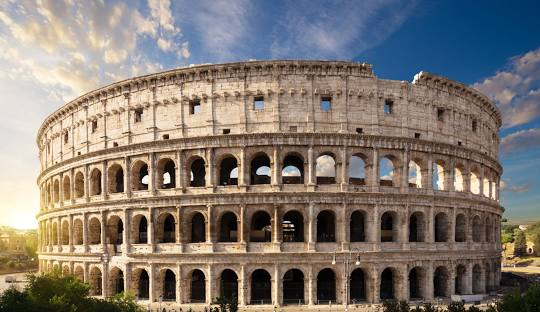
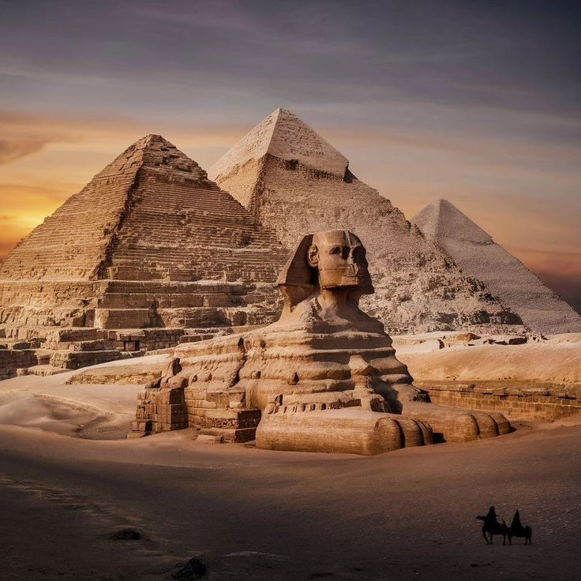

Great Wall of China

The Great Wall of China is a series of fortifications built across the northern borders of China to protect the country from invasions.
Taj Mahal

The Taj Mahal is a white marble mausoleum located in Agra, India, built by Mughal Emperor Shah Jahan in memory of his wife Mumtaz Mahal.
Machu Picchu

Machu Picchu is an Inca citadel located on a mountain ridge above the Urubamba Valley in Peru, built in the 15th century.
Chichén Itza

Chichén Itza is a pre-Columbian Mayan city located on the Yucatán Peninsula in Mexico, built by the Maya civilization.
Roman Colosseum
The Roman Colosseum is an amphitheatre in the centre of Rome, Italy, built in the 1st century AD and one of the greatest architectural and engineering achievements of the ancient world.
Christ the Redeemer

Christ the Redeemer is a Art Deco statue of Jesus Christ located in Rio de Janeiro, Brazil, designed by French sculptor Paul Landowski and built by Brazilian engineer Heitor da Silva Costa.
Pyramid of Giza
The Pyramid of Giza is the oldest and only remaining ancient wonder of the original Seven Wonders of the Ancient World, located on the Giza Plateau in Egypt.